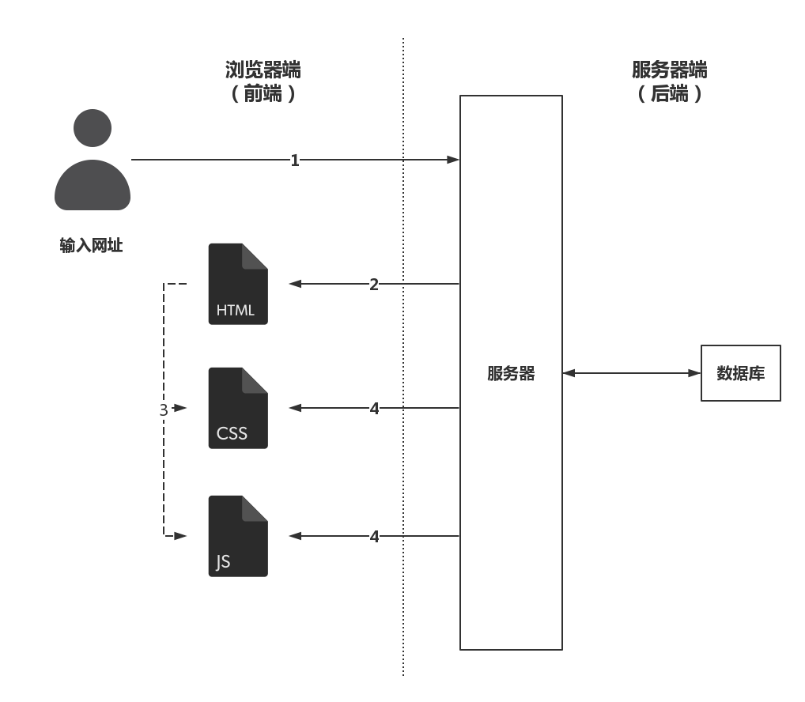
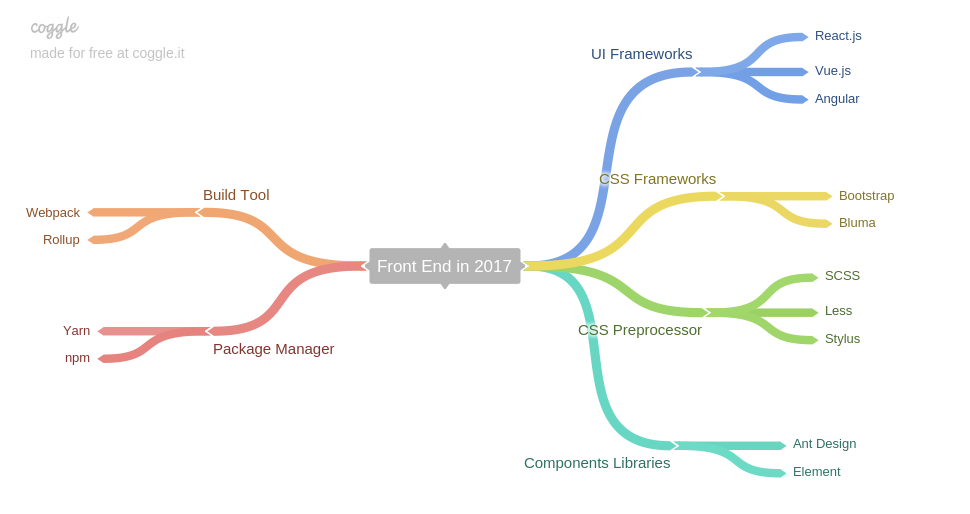

# 前端入门 给同学们讲讲前端 [@zerosrat](https://github.com/zerosrat) <time>2017.11.25</time>
- 什么是前端 - 前端入门知识 - 前端学习路线 - 工程师自我修养
# 一、什么是前端
Q: 当我们在浏览器输入网址后发生了什么？

# 二、前端入门知识
## 三剑客 - HTML - CSS - JavaScript
## 各司其职 - HTML -> <span style="color:red">结构</span> - CSS -> <span style="color:red">样式</span> - JavaScript -> <span style="color:red">行为</span>
## 举个例子🌰
# 三、前端学习路线
hint: 不是严格的顺序路线
## Stage 1 - 前端初探 > HTML5, CSS2.1, JavaScript 入门 - 《Head First HTML and CSS》 - 《Head First HTML5 Programming》 - 《JavaScript DOM编程艺术》 - 《精通CSS》 or - learn online: [w3school](http://www.w3school.com.cn/) & [freeCodeCamp](https://www.freecodecamp.org)
完成这个阶段，就可以手写一些简单页面了 - 自己手写淘宝、知乎练手 - 用 Github Pages 搭建自己的静态博客
## Stage 2 - 打稳地基 > HTML5, CSS2.1/CSS3, ES5/ES2015+ 熟练运用 书单 - 《JavaScript高级程序设计》 - 《深入理解ES6》 - [《You Don't Know JS》](https://github.com/getify/You-Dont-Know-JS) - 《HTML5高级程序设计》 - 《CSS权威指南》
参考文档 - [MDN web docs](https://developer.mozilla.org/zh-CN/) - [HTML Spec](https://html.spec.whatwg.org/) - [CSS Specs](https://www.w3.org/Style/CSS/specs.en.html) - [ECMAScript Spec](https://www.ecma-international.org/publications/standards/Ecma-262.htm)
这个阶段或许会有些漫长... 但是完成这个阶段，你能够 - 拥有扎实基础的前端工程师 - 面对业务需求胸有成竹 <p style="color:red;" class="fragment" data-fragment-index="2"> 然而，这样还不够 </p>
## Stage 3 - 优雅与性能 > 优雅使用 JavaScript; 把 CSS 作为艺术 - 《JavaScript语言精粹》 - 《高性能JavaScript》 - 《CSS揭秘》
这个阶段是上个阶段的延续 进行这个阶段的同时，可以进入下一个阶段
## Stage 4 - 框架使用、面向未来 ``` js for(;;) { // 学习现代前端框架，理解其技术背景 } ``` - React.js - Vue.js - Angular(JS) - ...
## 2017 前端技术栈 <!-- - UI Libraries/Frameworks: React.js, Vue.js, Angular - Components Libraries: Ant Design, Element - CSS Preprocessor: SCSS, Less, Stylus - CSS Frameworks: BootStrap, Bluma - Build Tool: Webpack - Package Manager: Yarn, npm --> 
# 四、软件工程师基本素养
## 不仅仅是前端工程师，也是软件工程师 > 计算机基础 - 数据结构与算法 - 计算机网络 - 操作系统 - 计算机组成原理
Why - 已知领域与未知领域存在相同规律 - 不仅仅是切图仔
# Q & A
# Thanks